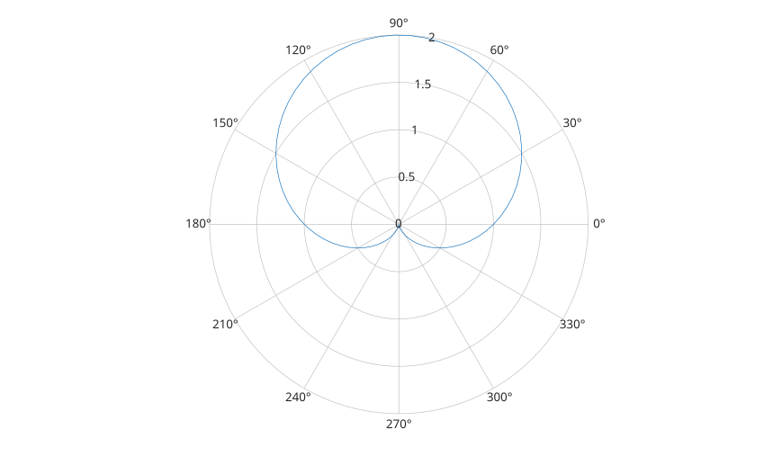

polaraxes()
polaraxes(propertyName, propertyValue, ...)
ax = polaraxes(...)
| Paramètre | Description |
|---|---|
| propertyName | Nom de propriete d'axes : chaine scalaire ou vecteur ligne de caracteres. |
| propertyValue | Valeur affectee a la propriete d'axes precedente. |
| Paramètre | Description |
|---|---|
| ax | Objet graphique axes initialise pour les traces polaires. |
polaraxes cree un objet axes et l'initialise pour le rendu en coordonnees polaires.
L'etat polaire est stocke sur l'axes et contient les limites radiales, les limites angulaires, les graduations, les etiquettes, les handles de grille et les handles de donnees tracees.
L'objet reste un objet graphique axes. Utiliser polarplot pour ajouter des donnees polaires, puis rlim, rticks, rticklabels, thetalim, thetaticks et thetaticklabels pour personnaliser les decorations polaires.
Voir proprietes de polaraxes pour la liste complete des proprietes.
ax = polaraxes();
theta = linspace(0, 2*pi, 80);
polarplot(ax, theta, 1 + sin(theta));
rlim(ax, [0 2]);
| Version | Description |
|---|---|
| 2.0.0 | version initiale |